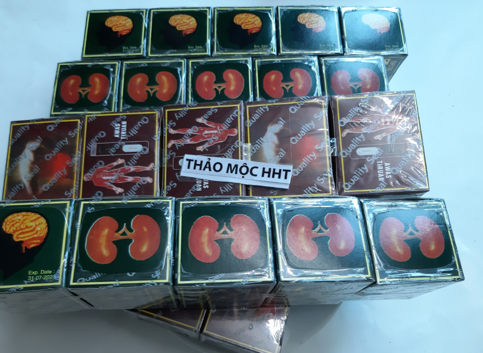

CÁCH CHỮA ĐAU NHỨC XƯƠNG KHỚP BẰNG THẢO DƯỢC¶
Hỏi:¶
Tôi bị đau nhức xương khớp cũng đã nhiều năm rồi, dùng nhiều loại thuốc mà chưa khỏi Xin hỏi thảo mộc HHT là có cách gì để chữa được bệnh đau nhức xương khớp lâu năm chưa khỏi của tôi không
Trả lời:¶
Hiện nay thảo mộc HHT có nhiều loại thuốc chữa đau nhức xương khớp tùy thuộc vào từng chứng bệnh và nhu cầu của người bệnh Xin kể ra dưới đây một số cách chữa bệnh đau nhức xương khớp bằng thảo dược để quý khách chọn lựa
1. Thuốc xương khớp của Malaysia màu đỏ¶
Đây là loại thuốc chế sẵn thành viên của malaysia, rất dễ sử dụng và tiện lợi. Thuốc này còn có các tên gọi khác như:
Thuốc chữa đau xương khớp Malaysia
Thuốc trị đau nhức xương khớp Malaysia
Thuốc xương khớp malaysia màu đỏ
Thuốc xương khớp Malaysia Mujarhabat Kapsul
Thuốc đau nhức xương khớp Malaysia
Mujarhabat Kapsul màu đỏ
Thường được gọi là thuốc, thực chất đây là một dạng thực phẩm chức năng có tác dụng làm giảm đau nhức xương khớp. Thuốc được sản xuất tại Malaysia do người dân đi lao động tại Malaysia mang về. Viên uống này có các thành phần hoàn toàn bằng thảo dược nên an toàn cho người sử dụng
2. Thuốc xương khớp Malaysia màu xanh¶
Đây là loại thuốc viên uống của malaysia thuốc có vỏ hộp màu xanh, thuốc có tác dụng tốt cho xương khớp, ngoài hỗ trợ giảm đau thuốc còn hỗ trợ về các bệnh như
Bệnh về thận
Bệnh về não như bệnh tiền đình, thiếu máu não
Bệnh về đường ruột như đại tràng
Thuốc thường được gọi với các tên
Thuốc xương khớp Malaysia màu xanh
Thuốc trị đau nhức xương khớp Malaysia
Thuốc xương khớp Malaysia Mujarhabat Kapsul
Thuốc Professor’s Pill
Keluaran Baru của Đức
Pek Baru new pack
Thuốc có nhiều tác dụng nên tác dụng hỗ trợ điều trị xương khớp không mạnh bằng thuốc màu đỏ, tuy nhiên đây một trong những thuốc xương khớp được nhiều người sử dụng vì hiệu quả của thuốc đem lại khá tốt.
Giá bán:¶
Giá thành cho 01 hộp thuốc xương khớp là 100.000 đ/ hộp
Quý khách mua từ 05 hộp trở lên được miễn cước vận chuyển
Quý khách mua càng nhiều có giá càng tốt
Liên hệ đặt hàng:¶
Điện thoại 0964.421.551 hoặc 0932.340.345
Quý khách đặt bài thuốc nguồn gốc độc hoạt tang ký sinh vui lòng chuyển tiền đặt hàng trước.
3. Thuốc bột, thuốc sắc nguồn gốc từ bài thuốc độc hoạt tang ký sinh¶
Độc hoạt 12 gam.
Tang ký sinh 16-40 gam.
Tần giao 12 gam.
Phòng phong 12 gam.
Tế tân 4-8 gam.
Đương quy 12 gam
Thược dược 12 gam.
Xuyên khung 8-12 gam.
Địa hoàng 16-24 gam.
Đỗ trọng 12 gam.
Ngưu tất 12 gam.
Nhân sâm 12 gam.
Phục linh 12 gam
Chích thảo 4 gam.
Quế tâm 4 gam.
Các vị thảo dược được tuyển chọn, là những vị thảo dược chất lượng, người dùng thấy chuyển biến sau khi dùng từ 5 đến 10 thang
Giá bán:¶
Giá thành cho 01 thang thuốc là 150.000 đ/ thang
Liên hệ đặt hàng:¶
Điện thoại 0964.421.551 hoặc 0932.340.345
Quý khách đặt bài thuốc nguồn gốc độc hoạt tang ký sinh vui lòng chuyển tiền đặt hàng trước.
Ưu điểm:
Các thành phần thuốc hoàn toàn từ thảo dược, người sử dụng có thể nhìn thấy từng vị thuốc
Các thảo dược được kiểm soát về mặt chất lượng, an toàn khi sử dụng
Tác dụng tốt, phù hợp với nhiều loại bệnh về xương khớp
Nhược điểm:
Giá thành cao một thang thuốc còn đắt hơn cả một hộp thuốc xương khớp của Malaysia
Không tiện sử dụng, phải sắc thuốc rất mất công.
Nếu dùng thuốc bột thì tiện lợi hơn
4. Thuốc bột, thuốc sắc nguồn gốc từ bài thận khí hoàn¶
Sinh địa 32g
Hoài Sơn 16g
Sơn thù 16g
Phục linh 12g
Trạch tả 12g
Đan bì 12g
Quế chi 6g
Phụ tử 6g
Các vị trên có thể được gia giảm tùy thuốc vào cơ địa từng người. Các vị thảo dược được tuyển chọn, là những vị thảo dược chất lượng, người dùng thấy chuyển biến sau khi dùng từ 10 đến 20 thang
Giá bán:¶
Giá thành cho 01 thang thuốc là 100.000 đ/ thang
Liên hệ đặt hàng:¶
Điện thoại 0964.421.551 hoặc 0932.340.345
Quý khách đặt bài thuốc nguồn gốc thận khí hoàn vui lòng chuyển tiền đặt hàng trước.
Ưu điểm:
Các thành phần thuốc hoàn toàn từ thảo dược, người sử dụng có thể nhìn thấy từng vị thuốc
Các thảo dược được kiểm soát về mặt chất lượng, an toàn khi sử dụng
Tác dụng tốt, phù hợp với nhiều loại bệnh về xương khớp
Nhược điểm:
Giá thành cao một thang thuốc còn đắt hơn cả một hộp thuốc xương khớp của Malaysia
Không tiện sử dụng, phải sắc thuốc rất mất công.
Nếu dùng thuốc bột, thuốc hoàn thì tiện lợi hơn
5. Các bài thảo dược ngâm rượu¶
Khi bị đau xương khớp cách chữa trị hiệu quả là dùng rượu thuốc, rượu có tác dụng dẫn thuốc tới vùng bị đau
Thảo dược kết hợp với rượu làm giảm đau và người bênh sẽ thấy nhanh khỏi hơn.
Hiện tại thảo mộc HHT có những bài thảo dược ngâm rượu như sau:
Thảo dược 29 vị chữa đau xương khớp, bổ thận, tăng cường sức khỏe¶
Mời các bạn xem video
Note
Liên hệ Thảo mộc HHT - Điện thoại: 0964.421.551